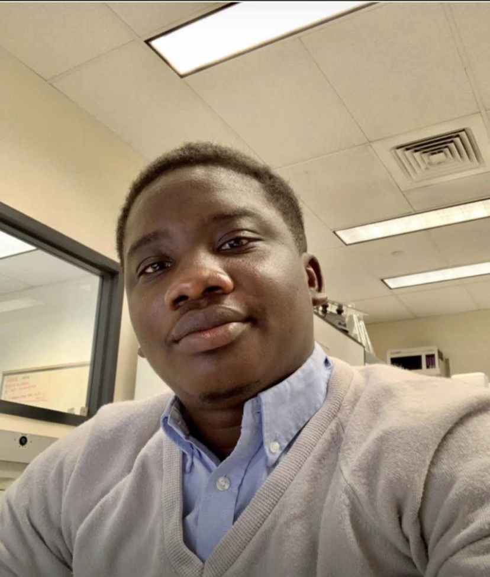

Gracious Y. B. Donkor
Third-Year Doctoral Fellow
Department of Microbiology · University of Illinois Urbana-Champaign
Advisor: James M. Slauch, PhD
Akwaaba (Welcome)! I study genetic mechanisms that underlie virulence gene expression in enteric pathogens such as Salmonella Typhimurium.
About
I am a microbial geneticist and third-year Doctoral Fellow in the Slauch Lab at the University of Illinois Urbana-Champaign. My work sits at the intersection of bacterial pathogenesis, post-translational regulation, and antimicrobial biology.
Before joining UIUC, I completed an M.S. in Microbiology at Illinois State University, where I investigated novel antimicrobial compounds and developed bioassays to study the clinical dynamics of antibiotic misuse. I received my B.Sc. in Medical Laboratory Technology from Kwame Nkrumah University of Science and Technology, Ghana.
I am open to collaborations on topics related to bacterial genetics, virulence regulation, and antimicrobial resistance.
- Bacterial genetics
- Bacterial pathogenesis
- Antimicrobial resistance
- Antimicrobial development
- Virulence regulation
Research
-
Doctoral Research Fellow 2023 – present
Slauch Lab · Department of Microbiology · University of Illinois Urbana-Champaign
Investigating post-transcriptional and post-translational mechanisms governing the Salmonella Pathogenicity Island 1 Type 3 Secretion System (SPI1-T3SS), with a focus on the regulation of HilD — the master virulence regulator. Current work characterizes the HilD–HilE protein interaction using genetic, biochemical, and computational approaches.
-
Graduate Research Assistant 2020 – 2023
Dahl Lab · Department of Biological Sciences · Illinois State University
Characterized the mechanism of action of a novel ruthenium–silver antimicrobial (AGXX) and its synergy with aminoglycosides against drug-resistant Pseudomonas aeruginosa. Investigated alkyl pyridinol compounds against Gram-positive pathogens and studied bacterial responses to reactive oxygen and chlorine species. Co-authored an NIH R03 grant on antimicrobial adjuvant discovery.
Publications
Talks & Presentations
-
Midwest Microbial Pathogenesis Conference · Loyola, IL · Poster presentation
-
MCB Recruitment Weekend · UIUC, IL · Poster presentation
-
Midwest Microbial Pathogenesis Conference · Madison, WI · Poster presentation
-
Molecular Genetics of Bacteria and Phages Meeting · Madison, WI · Poster presentation
-
Midwest Microbial Pathogenesis Conference · East Lansing, MI · Poster presentation
Awards & Fellowships
- May 2025Mame Shiao Debbie Award · UIUC
- May 2025James Beck Fellowship · UIUC
- Sept 2024James L. Fisher Outstanding Thesis Award (2023/24) · Illinois State University
- May 2024School of Biological Sciences Outstanding MS Student (2023/24) · Illinois State University
- May 2024Phi Sigma Publication Award (2023/24) · Illinois State University
- Oct 2022Lela Winegarner Fellowship
- Sept 2022BirdFEEDER Research Grant Award
- Sept 2022College of Science Travel Grant · Illinois State University
- June 2022Sigma Xi Grants in Aid of Research
- May 2022Mockford–Thompson Research Fellowship
- May 2022Robert D. Weigel Research Grant
- Feb 2022Phi Sigma Symposium — 2nd Place Graduate Poster
- May 2021Mockford–Thompson Research Fellowship
CV
Education
-
Ph.D. Microbiology 2023 – present
University of Illinois Urbana-Champaign
Advisor: James M. Slauch, PhD
-
M.S. Microbiology 2023
Illinois State University
Advisor: Jan-Ulrik Dahl, PhD · James L. Fisher Outstanding Thesis Award recipient
-
B.Sc. Medical Laboratory Technology
Kwame Nkrumah University of Science and Technology, Ghana
Grants & Funding
- 2023NIH Small Research Grants Program (R03) · Co-written with Jan-Ulrik Dahl, PhD
- Sept 2022BirdFEEDER Research Grant Award
- June 2022Sigma Xi Grants in Aid of Research
Full CV available upon request · gracious.donkor@gmail.com
Contact
The best way to reach me is by email: gracious.donkor@gmail.com
Department of Microbiology
University of Illinois Urbana-Champaign
Urbana, IL 61801